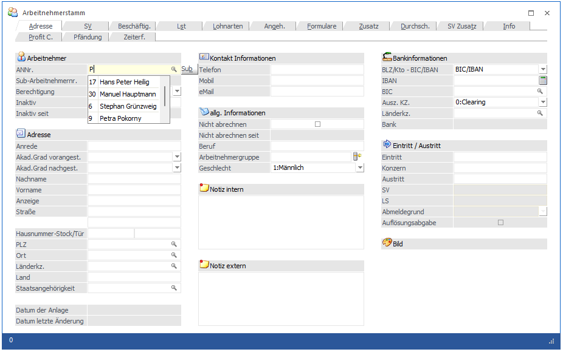
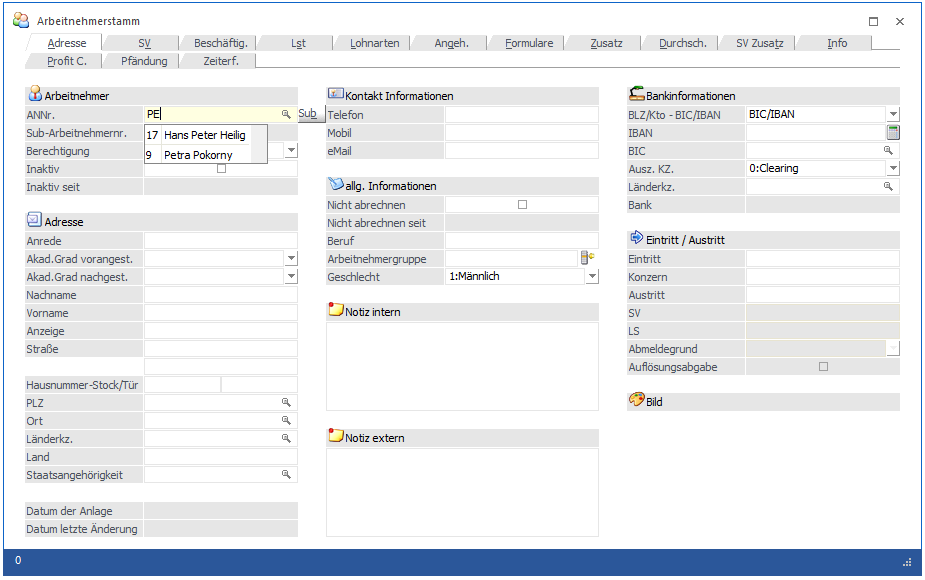
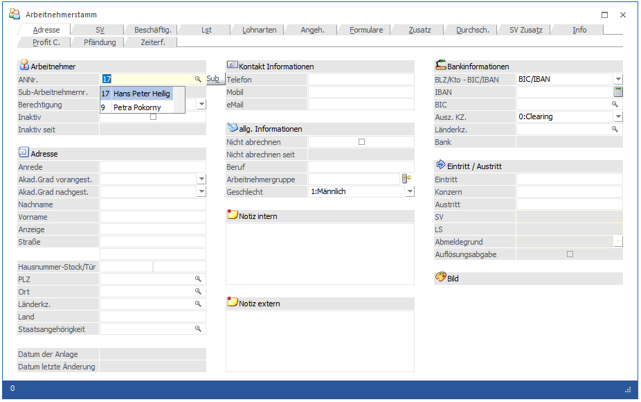

Es gibt mehrere Möglichkeiten, wie ein AN aufgerufen werden kann:
1.) Direkte Eingabe und Bestätigung der AN-Nummer im Feld, wo die AN-Nummer eingegeben werden soll.
2.) Aufruf des Matchcodes mit der F9-Taste, wobei wahlweise vorher bereits ein Suchbegriff mit gegeben werden kann oder nicht (siehe auch Arbeitnehmerstamm Matchcode).
3.) Im Feld AN-Nummer wird begonnen, der AN-Name oder die AN-Nummer einzugeben. Nach einer kurzen Verzögerung (ca. 1 Sekunde - dieser Wert kann allerdings auch über die MESONIC.INI gesteuert werden) wird dann eine Liste aller AN angezeigt, die dem eingegebenen Wert entsprechen, wobei hier eine Volltextsuche angewendet wird. Im ersten Schritt wird allerdings noch kein Eintrag aus der Liste ausgewählt.
Beispiel 1 - es wird nur der Buchstabe P eingetragen, danach wird eine Liste aller AN angezeigt, die irgendwo ein P beinhalten.

Beispiel 2 - es wird noch zusätzlich das E eingetragen (also PE), dann werden in der die entsprechenden AN angezeigt, die das PE im Namen enthalten habe.

In dem Fall ist aber immer noch kein AN ausgewählt. D.h. es kann immer noch die Matchcode-Funktion ausgelöst werden. Erst wenn dann die Pfeil-nach-Unten-Taste gedrückt wird, wird der Focus auf die erste Zeile in der Tabelle gesetzt und dann wird auch die entsprechende Nummer in das Feld "ANNr." übernommen.

Wird nun die Eingabe-Taste (Return-Taste) gedrückt, dann wird der entsprechende AN aufgerufen.